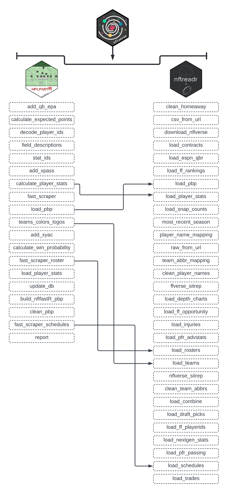

1 An Introduction to NFL Analytics and the R Programming Language (*rough draft)
As mentioned in the Preface of this book, the nflverse has drastically expanded since the inception of nflfastR in April of 2020. In total, the current version of the nflverse is comprised of five separate R packages:
nflfastRnflseedRnfl4thnflreadrnflplotR
Installing the nflverse as a package in R will automatically install all five packages. However, the core focus of this book will be on nflreadr. It is understadable if you are confused by that, since the Preface of this book introduced the nflfastR package.
Because of that, it is important to note that the nflreadr package, as explained by its author (Tan Ho), is a "minimal package for downloading data from nflverse repositories. The data that is the nflverse is stored acoss five different GitHub repositories. Using nflreadr allows for easy access to any of these data sources. For lack of a better term, nflreadr acts as a shortcut of sorts while also operating with less dependencies.
As you will see in this book, using nflreadr:: while coding provides nearly the identical functions included when using nflfastR::. In fact, running nflfastR::load_pbp() now calls, “under the hood,” nflreadr::load_pbp() while nflfastR::load_player_stats() is now deprecated as well, and calls nflreadr::load_player_stats().
Aside from that, the nflreadr package includes a number of data options not included in nflfastR such as combine, draft picks, contract, trades, injury information, and access to statistics on Pro Football Reference.
While nflfastR did initially serve as the foundation of the “amateur NFL analytics” movement, the nflreadr package has superceded it and now serves as the “catchall” package for all the various bits and pieces of the nflverse. Because of this, and to maintain consistency throughout, this book - nearly exclusively - will use nflreadr:: when calling functions housed within the nflverse rather than nflfastR::.
To below diagram visualizes the relationship between nflfastR and nflreadr.

Figure 1.1: Comparing nflfastR to nflreadr
1.1 nflreadr: An Introduction to the Data
The most important part of the nflverse is, of course, the data. To begin, we will examine the core data that underpins the nflverse: player weekly stats and the more advanced and robust play-by–play data. Using nflreadr, the end user is able to collect weekly top-level stats via the load_player_stats() function or the much more robust play-by-play numbers by using the load_pbp() function.
As you may imagine, there is a very important distinction between the load_player_stats() and load_pbp(). As mentioned, load_player_stats() will provide you with weekly, pre-calculated statistics for either offense or kicking. Conversely, load_pbp() will provide over 350 metrics for every single play of every single game dating back to 1999.
The load_player_stats() function includes the following offensive information:
offensive.stats <- nflreadr::load_player_stats(2021)
ls(offensive.stats)## [1] "air_yards_share" "attempts"
## [3] "carries" "completions"
## [5] "dakota" "fantasy_points"
## [7] "fantasy_points_ppr" "interceptions"
## [9] "pacr" "passing_2pt_conversions"
## [11] "passing_air_yards" "passing_epa"
## [13] "passing_first_downs" "passing_tds"
## [15] "passing_yards" "passing_yards_after_catch"
## [17] "player_id" "player_name"
## [19] "racr" "receiving_2pt_conversions"
## [21] "receiving_air_yards" "receiving_epa"
## [23] "receiving_first_downs" "receiving_fumbles"
## [25] "receiving_fumbles_lost" "receiving_tds"
## [27] "receiving_yards" "receiving_yards_after_catch"
## [29] "recent_team" "receptions"
## [31] "rushing_2pt_conversions" "rushing_epa"
## [33] "rushing_first_downs" "rushing_fumbles"
## [35] "rushing_fumbles_lost" "rushing_tds"
## [37] "rushing_yards" "sack_fumbles"
## [39] "sack_fumbles_lost" "sack_yards"
## [41] "sacks" "season"
## [43] "season_type" "special_teams_tds"
## [45] "target_share" "targets"
## [47] "week" "wopr"As well, switching the stat_type to “kicking” provides the following information:
kicking.stats <- nflreadr::load_player_stats(2021, stat_type = "kicking")
ls(kicking.stats)## [1] "fg_att" "fg_blocked" "fg_blocked_distance"
## [4] "fg_blocked_list" "fg_long" "fg_made"
## [7] "fg_made_0_19" "fg_made_20_29" "fg_made_30_39"
## [10] "fg_made_40_49" "fg_made_50_59" "fg_made_60_"
## [13] "fg_made_distance" "fg_made_list" "fg_missed"
## [16] "fg_missed_0_19" "fg_missed_20_29" "fg_missed_30_39"
## [19] "fg_missed_40_49" "fg_missed_50_59" "fg_missed_60_"
## [22] "fg_missed_distance" "fg_missed_list" "fg_pct"
## [25] "gwfg_att" "gwfg_blocked" "gwfg_distance"
## [28] "gwfg_made" "gwfg_missed" "pat_att"
## [31] "pat_blocked" "pat_made" "pat_missed"
## [34] "pat_pct" "player_id" "player_name"
## [37] "season" "season_type" "team"
## [40] "week"While the data returned is not as robust as the play-by-play data we will covering next, the load_player_stats() function is extremely helpul when you need to quickly (and correctly!) recreate the official stats listed on either the NFL’s website or on Pro Football Reference.
As an example, let’s say you need to get Ben Roethlisberger’s total passing yard and attempts from the 2021 season. You could do so via load_pbp() but, if you do not need further context, using load_player_stats() is much more efficient.
1.1.1 Getting Weekly Player Stats via load_player_stats()
If you are familar with R, it might seem logical to do the following to get Roethlisberger’s total passing yards and number of attempts from the 2021 season:
weekly.data <- nflreadr::load_player_stats(2021)
ben.weekly <- weekly.data %>%
group_by(player_id, player_name) %>%
filter(season_type == "REG" & player_name == "B.Roethlisberger") %>%
summarize(total.yards = sum(passing_yards),
n.attempts = sum(attempts))## `summarise()` has grouped output by 'player_id'. You can override using the
## `.groups` argument.
tibble(ben.weekly)## # A tibble: 1 x 4
## player_id player_name total.yards n.attempts
## <chr> <chr> <dbl> <int>
## 1 00-0022924 B.Roethlisberger 3740 605As you can see in the ben.weekly output, we have matched his official 2021 regular stats perfectly with 3,740 passing yards on 605 attempts. The code we just created is doing several things. First, we are using nflreadr::load_player_stats(2021) to place the data into our R environment in a DF titled weekly.data.
Next, we group the data together by alike player_id (as every individual player has a unique ID number) as well as the player’s actual name. At the filtering level, we are looking for just the regular season (REG) within season_type and also removing all quarterbacks except for Ben Roethlisberger. It is important to note that player names are just first initial and last name, without a space after the period.
After filtering for the regular season, we are able to summarize all of the weekly data into combined statistics by summing the weekly totals of passing yards and attempts.
Unfortunately, we are still not done. In order to get Roethlisberger’s name attached to it, if you needed it, we needed to complete a left_join between our ben.weekly and rosters dataframes. To do so, we are matching up the player_id to the gsis_id within the roster information. After that information is combined, we are able to pull out just Roethlisberger’s information and select the columns we want.
However, filtering by player_name can lead to signifcant issues with your results. An excellent example of this is Josh Allen. Let’s recreate the code above that successfully provided Roethlisberger’s stats, but replace Ben with Josh Allen:
josh.allen <- weekly.data %>%
group_by(player_name) %>%
filter(player_name == "J.Allen" & season_type == "REG") %>%
summarize(total.yards = sum(passing_yards),
n.attempts = sum(attempts))
tibble(josh.allen)## # A tibble: 1 x 3
## player_name total.yards n.attempts
## <chr> <dbl> <int>
## 1 J.Allen 4049 603The output tells us Allen threw for 4,049 yards on 603 attempts during the 2021 regular season. A check of his Pro Football Reference page tells us those numbers are incorrect. In fact, he had 4,407 passing yards on 646 attempts. How did we end up 358 passing yards and 43 attempts short?
The answer comes from Aaron Schatz, the creator of Football Outsiders, who explained in a Tweet that the official Buffalo Bills’ scorer, during week 3 of the NFL season, decided to refer to Allen as “Jos.Allen” as a result of the Washington Commanders having a player named “Jonathan Allen.”
To double check this, we can run the same code as above, but remove the player_name filter and switch to searching for just those players on the Buffalo Bills by using recent_team.
two.josh.allens <- weekly.data %>%
group_by(player_id, player_name) %>%
filter(season_type == "REG" & recent_team == "BUF") %>%
summarize(total.yards = sum(passing_yards),
n.attempts = sum(attempts))## `summarise()` has grouped output by 'player_id'. You can override using the
## `.groups` argument.
tibble(two.josh.allens)## # A tibble: 17 x 4
## player_id player_name total.yards n.attempts
## <chr> <chr> <dbl> <int>
## 1 00-0027685 E.Sanders 0 0
## 2 00-0029000 C.Beasley 0 1
## 3 00-0031588 S.Diggs 0 0
## 4 00-0031787 J.Kumerow 0 0
## 5 00-0033308 M.Breida 0 0
## 6 00-0033466 I.McKenzie 0 0
## 7 00-0033550 D.Webb 0 0
## 8 00-0033869 M.Trubisky 43 8
## 9 00-0033904 D.Dawkins 0 0
## 10 00-0034857 J.Allen 4049 603
## 11 00-0034857 Jos.Allen 358 43
## 12 00-0035250 D.Singletary 0 0
## 13 00-0035308 T.Sweeney 0 0
## 14 00-0035689 D.Knox 0 0
## 15 00-0036187 R.Gilliam 0 0
## 16 00-0036196 G.Davis 0 0
## 17 00-0036251 Z.Moss 0 0Grouping by player_id and player_name (as well as filtering down to Buffalo), we can see that, indeed, Josh Allen is in the data twice under the same player_id. Moreover, if you do the math, you can see that the numbers from his two entries add up to the official statistics on his Pro Football Reference page.
1.1.1.1 Using load_player_stats() Correctly
To avoid these situations, you could load up NFL rosters via the nflreadr::load_rosters() function, but that would require unnecessary code in order to merge the two DFs together. Instead, we can do this:
josh.allen <- weekly.data %>%
filter(season_type == "REG") %>%
group_by(player_id) %>%
summarize(player_name = first(player_name),
total.yards = sum(passing_yards),
n.attempts = sum(attempts)) %>%
filter(player_name == "J.Allen")The most efficient way to gather correct player statistics is to do the group_by with ONLY the player_id as, despite the variation in name, the player_id remained the same for Josh Allen. In order to include his correct name in the output, we can gather than within the summarize prior to calcuating the sum of passing_yards and attempts. After, if you desire to see only Josh Allen’s number, you can filter out to just his name.
1.1.2 Using load_player_stats() To Find Leaders
While using load_player_stats() does not provide the ability to add context to your analysis as we will soon see with load_pbp(), it does provide an easy and efficient way to determine weekly or season-long leaders over many top-level, widely-used NFL statistics. In the below example, we will determine the 2021 leaders in air yards per attempt.
1.1.2.1 An Example: 2021 QB Air Yards per Attempt Leaders
data <- nflreadr::load_player_stats(2021)
ay.per.attempt <- data %>%
group_by(player_id) %>%
filter(season_type == "REG") %>%
summarize(player_name = first(player_name),
n.attempts = sum(attempts),
n.airyards = sum(passing_air_yards),
ay.attempt = n.airyards / n.attempts) %>%
filter(n.attempts >= 400) %>%
select(player_name, ay.attempt) %>%
arrange(-ay.attempt)In the above example, we are using group_by to combine the desired statistics based on each unique player_id to, again, avoid any issues with player names within the data. After filtering to include just those statistics for the regular season, we first use the summarize function grab the first player_name associated with the player_id. After, we find two items: (1.) the total number of passing attempts by each QB which is outputted into a new row titled n.attempts and the regular season total of each QB’s air yards, again outputted into a new row titled n.airyards.
It is important to note that the final row created with the summarize function is not a statistic included within load_player_stats(). In order to find a QB’s average air yards per attempt, we must use the first two items we’ve created and do some simple division (the created n.airyards divided by n.attempts).
Finally, to “clear the noise” of those QBs with minimal attempts through the season, we included a filter to include those passers with at least 400 attempts. After, we arrange the new DF by sorting the QBs in descending order by average air yards per attempt.
The end results look like this:
tibble(ay.per.attempt)## # A tibble: 25 x 2
## player_name ay.attempt
## <chr> <dbl>
## 1 R.Wilson 9.89
## 2 J.Hurts 8.99
## 3 B.Mayfield 8.73
## 4 M.Stafford 8.48
## 5 J.Allen 8.20
## 6 K.Cousins 8.16
## 7 J.Burrow 8.12
## 8 D.Carr 8.12
## 9 T.Brady 8.10
## 10 T.Bridgewater 8.04
## # ... with 15 more rowsRussell Wilson led the NFL in 2021 with 9.89 air yards per attempt.
1.2 Using load_pbp() to Add Context to Statistics
As just mentioned above, using the load_pbp() function is preferable when you are looking to add context to a player’s statistics, as the load_player_stats() function is, for all intents and purposes, aggregated statistics that limit your ability to find deeper meaning.
To highlight this, let’s look at an example of how context can be added to a player’s statistics using load_pbp().
1.2.1 An Example: QB Aggresiveness on 3rd Down
Sticking with the air yards example from above, let’s examine a metric I created using load_pbp() that I coined QB 3rd Down Aggressiveness. The metric is designed to determine which QBs in the NFL are most aggressive in 3rd down situations by gauging how often they throw the ball to, or pass, the first down line. It is an interesting metric to explore as, just like many metrics in the NFL, not all air yards are created equal. For example, eight air yards on 1st and 10 are less valuable than the same eight air yards on 3rd and 5.
First, let’s highlight the code used to create the results for this metric and then break it down line-by-line.
data <- nflreadr::load_pbp(2021)
aggressiveness <- data %>%
group_by(passer_id) %>%
filter(down == 3, play_type == "pass", ydstogo >= 5, ydstogo <= 10) %>%
summarize(player_name = first(passer),
team = first(posteam),
total = n(),
aggressive = sum(air_yards >= ydstogo, na.rm = TRUE),
percentage = aggressive / total) %>%
filter(total >= 50) %>%
arrange(desc(percentage))
tibble(aggressiveness)## # A tibble: 30 x 6
## passer_id player_name team total aggressive percentage
## <chr> <chr> <chr> <int> <int> <dbl>
## 1 00-0033077 D.Prescott DAL 84 53 0.631
## 2 00-0035228 K.Murray ARI 60 37 0.617
## 3 00-0036389 J.Hurts PHI 65 40 0.615
## 4 00-0033873 P.Mahomes KC 93 56 0.602
## 5 00-0034855 B.Mayfield CLE 59 35 0.593
## 6 00-0036971 T.Lawrence JAX 78 46 0.590
## 7 00-0036355 J.Herbert LAC 87 51 0.586
## 8 00-0035710 D.Jones NYG 60 35 0.583
## 9 00-0036212 T.Tagovailoa MIA 60 35 0.583
## 10 00-0026498 M.Stafford LA 95 54 0.568
## # ... with 20 more rowsAs you can see in the tibble() output of the results, Dak Prescott was the most aggressive quarterback in 3rd down passing situations in the 2021 season, passing to, our beyond, the line of gain just over 63% of the time.
After creating a new dataframe called aggressiveness from the 2021 play-by-play we originally collected using data <- nflreadr::load_pbp(2021), we use group_by to ensure that the data is being collected per individual quarterback via passer_id.
However, there are a couple items to point out and clarify with the above code. Moreover, there are certainly arguments to be made regarding how to “capture” scenarios in the data that require “aggressiveness.”
After using the group_by function to lump data with each individual QB, we then use filter() function. Of course, we only want those play_types that are “pass” on 3rd downs. However, in the above code, we are filtering for just those 3rd down situations where the yards to go are between five and ten yards.
Doing so was a personal decision on my end when creating the metric. My logic? If there were less than five yards to go on 3rd down, the opposing defense would not be able to “sell out” to the pass as it would not be out of the question for an offense to attempt to gain the first down on the ground. Conversely, anything over ten yards likely results in the defense selling out to the pass, thus leaving an imprint on the aggressiveness output of the quarterbacks.
For the sake of curiosity, we can edit the above code to include all passing attempts on 3rd down with under 10 yards to go for the first down:
aggressiveness.under.10 <- data %>%
group_by(passer_id) %>%
filter(down == 3, play_type == "pass", ydstogo <= 10) %>%
summarize(player_name = first(passer),
team = first(posteam),
total = n(),
aggressive = sum(air_yards >= ydstogo, na.rm = TRUE),
percentage = aggressive / total) %>%
filter(total >= 50) %>%
arrange(desc(percentage))
tibble(aggressiveness.under.10)## # A tibble: 33 x 6
## passer_id player_name team total aggressive percentage
## <chr> <chr> <chr> <int> <int> <dbl>
## 1 00-0035228 K.Murray ARI 98 67 0.684
## 2 00-0036389 J.Hurts PHI 107 73 0.682
## 3 00-0036971 T.Lawrence JAX 131 88 0.672
## 4 00-0033077 D.Prescott DAL 136 89 0.654
## 5 00-0034857 J.Allen BUF 138 88 0.638
## 6 00-0036355 J.Herbert LAC 148 94 0.635
## 7 00-0036212 T.Tagovailoa MIA 93 59 0.634
## 8 00-0026498 M.Stafford LA 172 109 0.634
## 9 00-0023459 A.Rodgers GB 128 80 0.625
## 10 00-0035710 D.Jones NYG 85 53 0.624
## # ... with 23 more rowsThe results are quite different from the first running of this metric, as Dak Prescott is now the 4th most aggressive QB, while Kyler Murray moves to the top by approaching a nearly 70% aggressiveness rate on 3rd down. This small change highlights an important element about analytics: much of the work is the result of the coder (ie., you) being able to justify your decision-making process when developing the filters for each metric you create.
In this case, I stand by my argument that including just those pass attempts on 3rd down with between 5 and 10 yards to go is a more accurate assessment of aggressiveness as, for example, 3rd down with 8 yards to go is an obvious passing situation in most cases.
That begs the question, though: in which cases is 3rd down with 8 yards to go not an obvious passing situation?
1.2.1.1 QB Aggressiveness: Filtering for “Garbage Time?”
In our initial running of the QB Aggressiveness metric, Josh Allen is the 15th most aggressive QB in the NFL on 3rd down with between 5 and 10 yards to go. But how much does the success of the Buffalo Bills play into that 15th place ranking?
The Bills, at the conclusion of the 2021 season, had the largest positive point differential in the league at 194 (the Bills scored 483 points, while allowing just 289). Perhaps Allen’s numbers are skewed because the Bills were so often playing with the lead late into the game?
To account for this, we can add information into the filter() function to attempt to remove what are referenced to in the analytics community as “garbage time stats.”
Let’s add the “garbage time” filter to the code we’ve already prepared:
aggressiveness.garbage <- data %>%
group_by(passer_id) %>%
filter(down == 3, play_type == "pass", ydstogo >= 5, ydstogo <= 10,
wp > .05, wp < .95, half_seconds_remaining > 120) %>%
summarize(player_name = first(passer),
team = first(posteam),
total = n(),
aggressive = sum(air_yards >= ydstogo, na.rm = TRUE),
percentage = aggressive / total) %>%
filter(total >= 50) %>%
arrange(desc(percentage))
tibble(aggressiveness.garbage)## # A tibble: 26 x 6
## passer_id player_name team total aggressive percentage
## <chr> <chr> <chr> <int> <int> <dbl>
## 1 00-0033077 D.Prescott DAL 61 40 0.656
## 2 00-0036971 T.Lawrence JAX 51 33 0.647
## 3 00-0035228 K.Murray ARI 51 31 0.608
## 4 00-0026498 M.Stafford LA 79 48 0.608
## 5 00-0033873 P.Mahomes KC 68 41 0.603
## 6 00-0035710 D.Jones NYG 50 30 0.6
## 7 00-0036355 J.Herbert LAC 67 38 0.567
## 8 00-0036972 M.Jones NE 57 31 0.544
## 9 00-0034857 J.Allen BUF 59 32 0.542
## 10 00-0029263 R.Wilson SEA 56 30 0.536
## # ... with 16 more rowsWe are now using the same code, but have included three new items to the filter(). First, we are stipulating that, aside from the down and distance inclusion, we only want those plays that occured when the offense’s win probability was between 5% and 95%, as well as ensuring that the plays did not happen after the two-minute warning of either half.
The decision on range of the win probability numbers is, again, a personal preference. When nflfastR was first released, analyst often used a 20-80% range for win probability. However, Sebastian Carl - one of the creators of the nflverse explained in the package’s Discord:
Sebastian Carl: “I am generally very conservative with filtering plays using wp. Especially the vegas wp model can reach >85% probs early in the game because it incorporates market lines. I never understood the 20% <= wp <= 80%”garbage time" filter. This is removing a ton of plays. My general advice is a lower boundary of something around 5% (i.e., 5% <= wp <= 95%).
Ben Baldwin followed up on Carl’s thoughts:
Ben Baldwin: “agree with this. 20-80% should only be used as a filter for looking at how run-heavy a team is (because outside of this range is when teams change behavior a lot). and possibly how teams behave on 4th downs. but not for team or player performance.”
Based on that advice, I typically stick to the 5-95% range when filtering for win probability using play-by-play data. And, in this case, it did have an impact.
As mentioned, prior to filtering for garbage time, Allen was the 15th most aggressive QB in the league at nearly 52%. However, once filtering for garbage time, Allen rose to 9th most aggressive QB, with a slight increase of percentage to 54%.
What is interesting about the above example, though, is Dak Prescott and the Cowboys. Dallas maintained the second largest point differntial in the league (530 points for and 358 points against, for a 172 point difference). Without the garbage time filter, Prescott was tops in the NFL with an aggressiveness rating of 63%.
Once adjusted for garbage time? Prescott remained atop the NFL with an aggressiveness rating of 65.5%.
Allen’s increase in the standings, and Prescott remaining best in the league, in this specific metric, is a possible indicator that the inclusion of the “garbage time” filters provides a slightly more accurate result.
1.3 Retrieving & Working With Data for Multiple Seasons
In the case of both load_pbp() and load_player_stats(), it is possible to load data over multiple seasons.
In our above example calculating average air yard per attempt, it is important to note that Russell Wilson’s league-eading average of 9.89 air yards per attempt is calculated using all passing attempts, meaning pass attempts that were both complete and incomplete.
In our first example of working with data across multiple seasons, let’s examine average air yards for only completed passes. To begin, we will retrieve the play-by-play data for the last five seasons:
ay.five.years <- nflreadr::load_pbp(2017:2021)To retrieve multiple seasons of data, a colon : is placed between the years that you want. When you run the code, nflreadr will output the data to include the play-by-play data starting with the oldest season (in this case, the 2017 NFL season):
tibble(ay.five.years)## # A tibble: 243,131 x 372
## play_id game_id old_game_id home_team away_team season_type week posteam
## <dbl> <chr> <chr> <chr> <chr> <chr> <int> <chr>
## 1 1 2017_01_AR~ 2017091004 DET ARI REG 1 <NA>
## 2 37 2017_01_AR~ 2017091004 DET ARI REG 1 ARI
## 3 73 2017_01_AR~ 2017091004 DET ARI REG 1 ARI
## 4 97 2017_01_AR~ 2017091004 DET ARI REG 1 ARI
## 5 118 2017_01_AR~ 2017091004 DET ARI REG 1 ARI
## 6 153 2017_01_AR~ 2017091004 DET ARI REG 1 ARI
## 7 174 2017_01_AR~ 2017091004 DET ARI REG 1 ARI
## 8 207 2017_01_AR~ 2017091004 DET ARI REG 1 ARI
## 9 233 2017_01_AR~ 2017091004 DET ARI REG 1 DET
## 10 254 2017_01_AR~ 2017091004 DET ARI REG 1 DET
## # ... with 243,121 more rows, and 364 more variables: posteam_type <chr>,
## # defteam <chr>, side_of_field <chr>, yardline_100 <dbl>, game_date <chr>,
## # quarter_seconds_remaining <dbl>, half_seconds_remaining <dbl>,
## # game_seconds_remaining <dbl>, game_half <chr>, quarter_end <dbl>,
## # drive <dbl>, sp <dbl>, qtr <dbl>, down <dbl>, goal_to_go <dbl>, time <chr>,
## # yrdln <chr>, ydstogo <dbl>, ydsnet <dbl>, desc <chr>, play_type <chr>,
## # yards_gained <dbl>, shotgun <dbl>, no_huddle <dbl>, qb_dropback <dbl>, ...